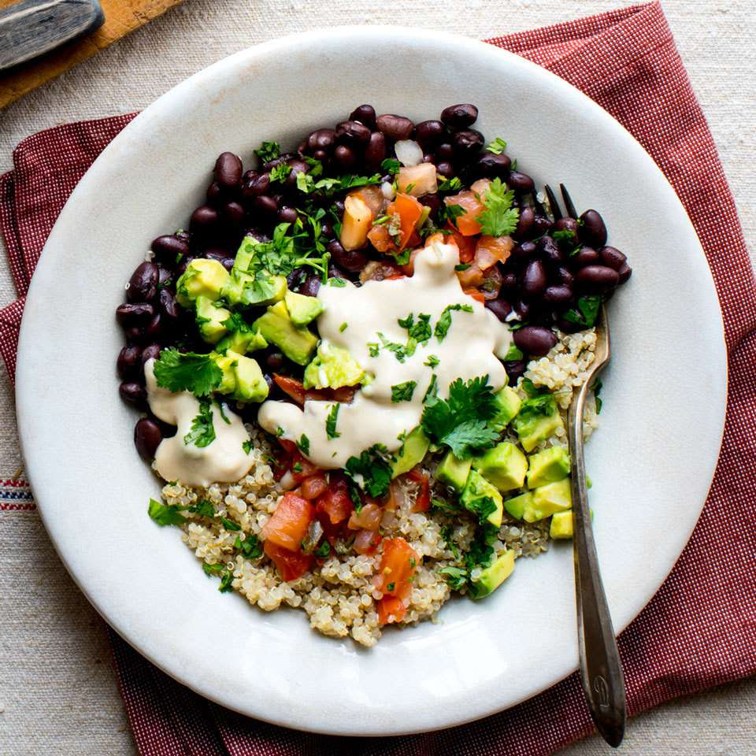

Back
Black Bean-Quinoa Bowl

Mmmmm, looks good!
Interesting recipe. I heard about this dish from ChatGPT. And it also looks like that plate you got from Ryerson that one time...
This recipe is sourced from here.
Ingredients
- 3/4 cup canned black beans, rinsed
- 2/3 cup cooked quinoa
- 1/4 cup hummus
- 1 tablespoon lime juice
- 1/4 medium avocado, diced
- 3 tablespoons pico de gallo
- 2 tablespoons chopped fresh cilantro
Steps
- Combine beans and quinoa in a bowl.
- Stir hummus and lime juice together in a small bowl; thin with water to desired consistency.
- Drizzle the hummus dressing over the beans and quinoa.
- Top with avocado, pico de gallo and cilantro.